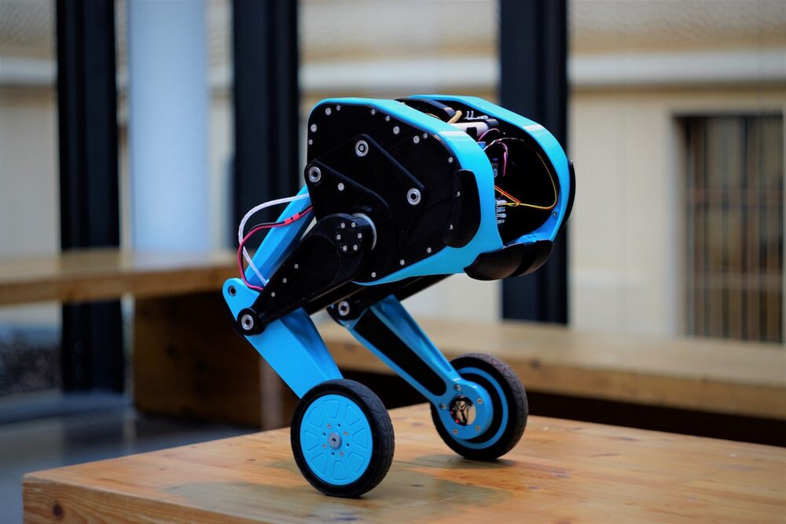
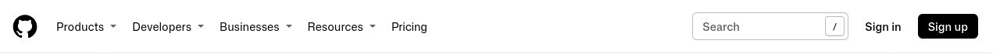
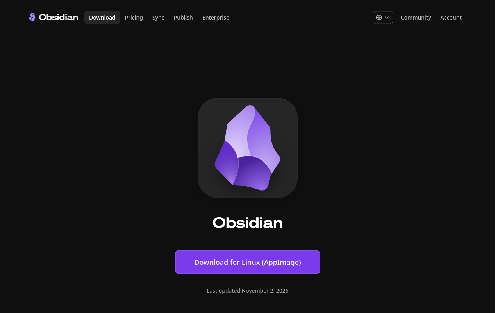
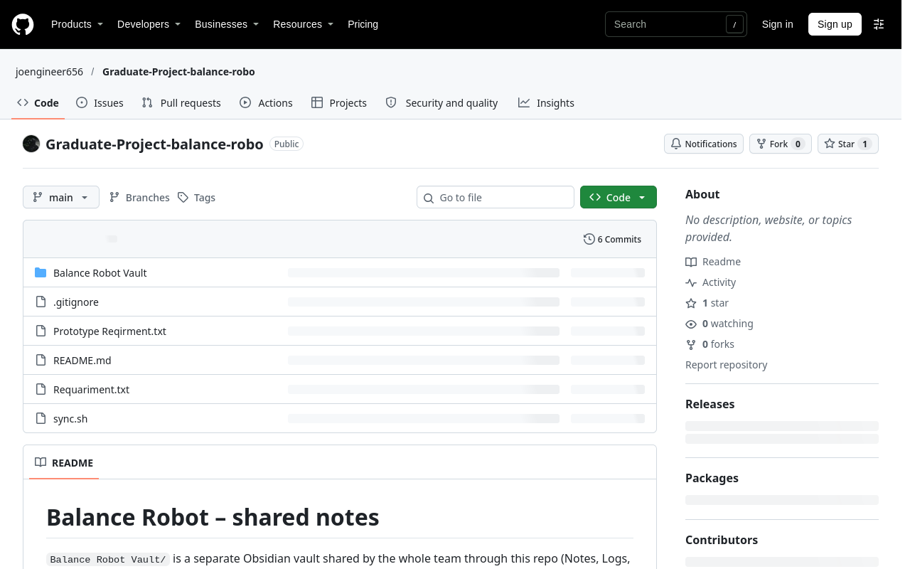
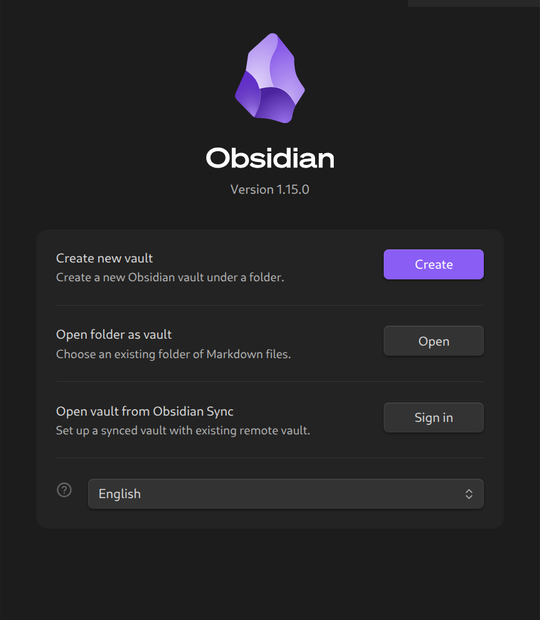
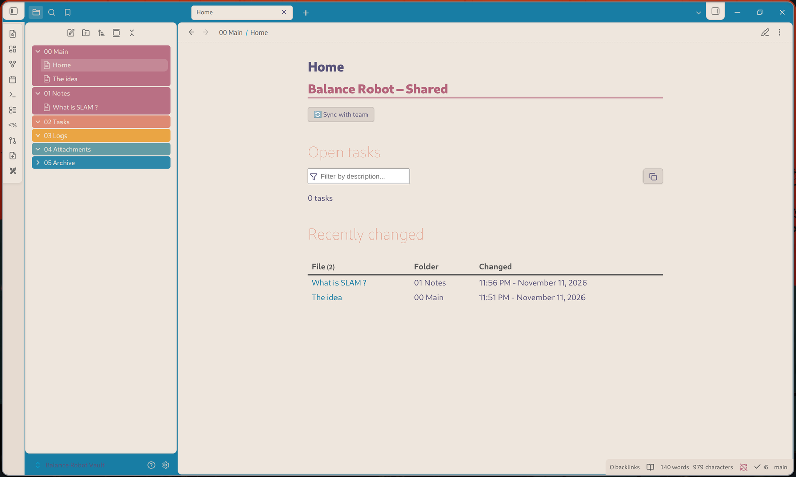

The Wheeled-Legged Balance Robot
Three mechatronics engineers, one robot, and one shared notebook. This page explains the project and gets your laptop synced with the team in about 15 minutes.

The project
We are a team of 3 mechatronics engineers from Balqa Applied University (BAU). We want to specialise in robotics, so we compared air drones, underwater drones, robot dogs, robot arms and hexapods, and chose a wheeled-legged balancing robot.
Less common
Drones and robot dogs are popular graduate projects. A wheeled-legged robot stands out.
A real challenge
A robot arm is not hard enough, and a hexapod has no strong reason to exist. Balancing on legs + wheels is.
Affordable
It costs less to build than a robot dog.
How our notes work
All project knowledge lives in one Obsidian vault (a folder of notes) called Balance Robot Vault. GitHub keeps everyone's copy in sync. Your personal Obsidian notes stay separate and private.
| Folder | What goes in it |
|---|---|
00 Main | Home (sync button, open tasks, recent changes) and the project idea |
01 Notes | Research and concepts (SLAM, control, motors…) |
02 Tasks | To-dos. Write - [ ] task and it shows on Home |
03 Logs | Meeting notes and test logs |
04 Attachments | PDFs, datasheets, files |
05 Archive | Old stuff. Pasted images land in 5.1 files automatically |
Setup (once)
-
Make a GitHub account
Go to github.com/signup and create a free account.

Then send your GitHub username to Jo. Jo will invite you to the repo. Open the invitation email (or github.com/notifications) and click Accept. Without this, you can read the notes but can't send your changes.
-
Install Git
🪟 Windows
Download Git for Windows and install it with the default options. Keep the install pathC:\Program Files\Git, because the sync button looks there.🐧 Linux / 🍎 macOS
Linux:sudo apt install git(or your distro's package manager). macOS: rungit --versionand accept the install prompt.Then open Git Bash (Windows) or a Terminal and tell Git who you are:
git config --global user.name "Your Name" git config --global user.email "you@example.com" -
Install Obsidian
Download it from obsidian.md/download. It's free.

-
Download the project
In Git Bash / Terminal, go where you want the project (e.g. Documents) and clone it:
cd ~/Documents git clone https://github.com/joengineer656/Graduate-Project-balance-robo.gitThe first time you sync, a GitHub login window opens. Sign in with your account. This is the repo you'll get:

-
Open the vault in Obsidian
In Obsidian: click the vault name at the bottom left → Manage vaults… → Open folder as vault → Open, and choose
Documents/Graduate-Project-balance-robo/Balance Robot Vault
When Obsidian asks about community plugins, click Trust author and enable plugins. The sync button and task list need them (Dataview and Tasks). -
Click Sync
Open
00 Main/Home. If you see code instead of a button, press Ctrl + E (Reading view). Click 🔄 Sync with team: it should turn into ✅.
Daily use
1 · Sync first
Click Sync before you start, so you have your friends' latest notes.
2 · Write
Create and edit notes anywhere in the vault, just like normal Obsidian.
3 · Sync again
Click Sync when you finish. Your changes go to GitHub for everyone.
If something goes wrong
| You see | Do this |
|---|---|
| Code instead of a button | Press Ctrl + E, and check that the plugins are enabled (Settings → Community plugins → turn on Dataview and Tasks). |
| ❌ … Authentication / Permission denied | You haven't accepted the GitHub invite yet, or you need to sign in. Accept the invite, then click Sync again. |
| ❌ Conflict: two people edited the same lines | Message the team. In Git Bash, inside the project folder, run git status. It lists the file; open it, keep the right text, delete the <<<<<<< / >>>>>>> lines, then run git add -A && git rebase --continue and click Sync. |
| ❌ … bash.exe not found (Windows) | Git for Windows is not installed in C:\Program Files\Git. Reinstall it with the default path. |
| Nothing works | In Git Bash / Terminal, in the project folder, run ./sync.sh and send the message it prints to the group. |